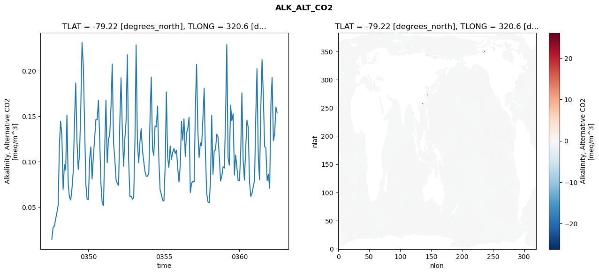
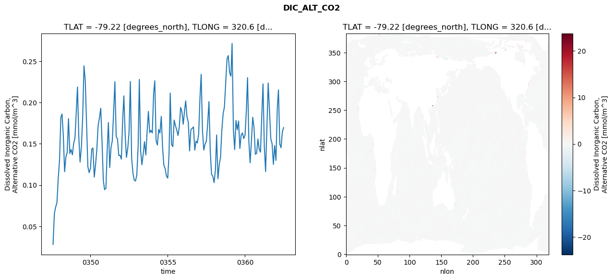
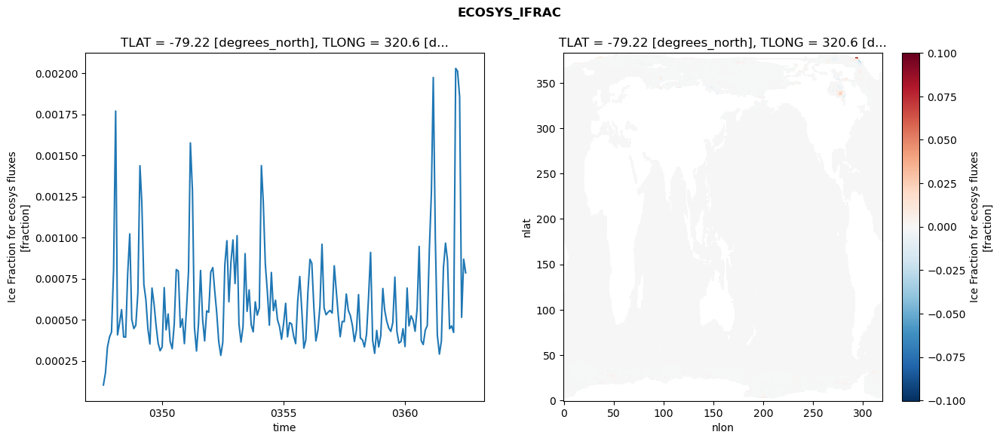
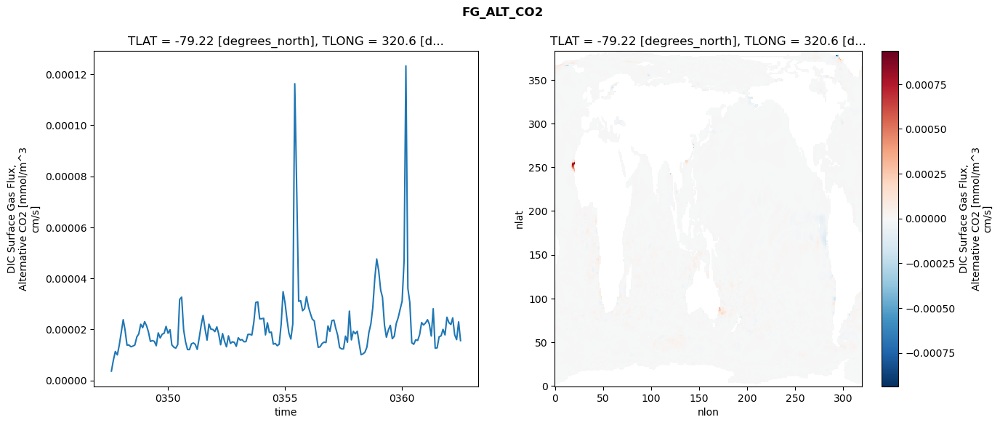

glb-dor_North_Atlantic_basin_001_1999-07-01_00006#
Simulation details#
Case: smyle.cdr-atlas-v0.glb-dor_North_Atlantic_basin_001_1999-07-01_00006.001
Basin: North_Atlantic_basin
Polygon: 1.0
Start date: 1999-07
Show code cell source Hide code cell source
import xarray as xr
import matplotlib.pyplot as plt
Show code cell source Hide code cell source
zarr_store = "/path/to/zarr/store"
# Parameters
zarr_store = "/global/cfs/projectdirs/m4746/Projects/Ocean-CDR-Atlas-v0/data/validation/smyle.cdr-atlas-v0.glb-dor_North_Atlantic_basin_001_1999-07-01_00006.001.validation.zarr"
Show code cell source Hide code cell source
%%time
ds_o = xr.open_zarr(zarr_store).compute()
ds_o
CPU times: user 620 ms, sys: 422 ms, total: 1.04 s
Wall time: 1.19 s
<xarray.Dataset> Size: 2MB
Dimensions: (nlat: 384, nlon: 320, time: 180)
Coordinates:
TLAT float64 8B -79.22
TLONG float64 8B 320.6
ULAT float64 8B -78.95
ULONG float64 8B 321.1
* time (time) object 1kB 0347-08-01 00:00:00 ... 0362-07-01 0...
z_t float32 4B 500.0
Dimensions without coordinates: nlat, nlon
Data variables:
ALK_ALT_CO2_diff (nlat, nlon) float32 492kB nan nan nan ... nan nan nan
ALK_ALT_CO2_rmse (time) float64 1kB 0.01467 0.02774 ... 0.1602 0.1538
DIC_ALT_CO2_diff (nlat, nlon) float32 492kB nan nan nan ... nan nan nan
DIC_ALT_CO2_rmse (time) float64 1kB 0.02806 0.06534 ... 0.1645 0.1696
ECOSYS_IFRAC_diff (nlat, nlon) float32 492kB nan nan nan ... nan nan nan
ECOSYS_IFRAC_rmse (time) float64 1kB 0.0001029 0.0001774 ... 0.000785
FG_ALT_CO2_diff (nlat, nlon) float32 492kB nan nan nan ... nan nan nan
FG_ALT_CO2_rmse (time) float64 1kB 3.64e-06 7.981e-06 ... 1.555e-05xarray.Dataset
- nlat: 384
- nlon: 320
- time: 180
- TLAT()float64-79.22
- long_name :
- array of t-grid latitudes
- units :
- degrees_north
array(-79.22052261)
- TLONG()float64320.6
- long_name :
- array of t-grid longitudes
- units :
- degrees_east
array(320.56250892)
- ULAT()float64-78.95
- long_name :
- array of u-grid latitudes
- units :
- degrees_north
array(-78.95289509)
- ULONG()float64321.1
- long_name :
- array of u-grid longitudes
- units :
- degrees_east
array(321.12500894)
- time(time)object0347-08-01 00:00:00 ... 0362-07-...
- bounds :
- time_bound
- long_name :
- time
array([cftime.DatetimeNoLeap(347, 8, 1, 0, 0, 0, 0, has_year_zero=True), cftime.DatetimeNoLeap(347, 9, 1, 0, 0, 0, 0, has_year_zero=True), cftime.DatetimeNoLeap(347, 10, 1, 0, 0, 0, 0, has_year_zero=True), cftime.DatetimeNoLeap(347, 11, 1, 0, 0, 0, 0, has_year_zero=True), cftime.DatetimeNoLeap(347, 12, 1, 0, 0, 0, 0, has_year_zero=True), cftime.DatetimeNoLeap(348, 1, 1, 0, 0, 0, 0, has_year_zero=True), cftime.DatetimeNoLeap(348, 2, 1, 0, 0, 0, 0, has_year_zero=True), cftime.DatetimeNoLeap(348, 3, 1, 0, 0, 0, 0, has_year_zero=True), cftime.DatetimeNoLeap(348, 4, 1, 0, 0, 0, 0, has_year_zero=True), cftime.DatetimeNoLeap(348, 5, 1, 0, 0, 0, 0, has_year_zero=True), cftime.DatetimeNoLeap(348, 6, 1, 0, 0, 0, 0, has_year_zero=True), cftime.DatetimeNoLeap(348, 7, 1, 0, 0, 0, 0, has_year_zero=True), cftime.DatetimeNoLeap(348, 8, 1, 0, 0, 0, 0, has_year_zero=True), cftime.DatetimeNoLeap(348, 9, 1, 0, 0, 0, 0, has_year_zero=True), cftime.DatetimeNoLeap(348, 10, 1, 0, 0, 0, 0, has_year_zero=True), cftime.DatetimeNoLeap(348, 11, 1, 0, 0, 0, 0, has_year_zero=True), cftime.DatetimeNoLeap(348, 12, 1, 0, 0, 0, 0, has_year_zero=True), cftime.DatetimeNoLeap(349, 1, 1, 0, 0, 0, 0, has_year_zero=True), cftime.DatetimeNoLeap(349, 2, 1, 0, 0, 0, 0, has_year_zero=True), cftime.DatetimeNoLeap(349, 3, 1, 0, 0, 0, 0, has_year_zero=True), cftime.DatetimeNoLeap(349, 4, 1, 0, 0, 0, 0, has_year_zero=True), cftime.DatetimeNoLeap(349, 5, 1, 0, 0, 0, 0, has_year_zero=True), cftime.DatetimeNoLeap(349, 6, 1, 0, 0, 0, 0, has_year_zero=True), cftime.DatetimeNoLeap(349, 7, 1, 0, 0, 0, 0, has_year_zero=True), cftime.DatetimeNoLeap(349, 8, 1, 0, 0, 0, 0, has_year_zero=True), cftime.DatetimeNoLeap(349, 9, 1, 0, 0, 0, 0, has_year_zero=True), cftime.DatetimeNoLeap(349, 10, 1, 0, 0, 0, 0, has_year_zero=True), cftime.DatetimeNoLeap(349, 11, 1, 0, 0, 0, 0, has_year_zero=True), cftime.DatetimeNoLeap(349, 12, 1, 0, 0, 0, 0, has_year_zero=True), cftime.DatetimeNoLeap(350, 1, 1, 0, 0, 0, 0, has_year_zero=True), cftime.DatetimeNoLeap(350, 2, 1, 0, 0, 0, 0, has_year_zero=True), cftime.DatetimeNoLeap(350, 3, 1, 0, 0, 0, 0, has_year_zero=True), cftime.DatetimeNoLeap(350, 4, 1, 0, 0, 0, 0, has_year_zero=True), cftime.DatetimeNoLeap(350, 5, 1, 0, 0, 0, 0, has_year_zero=True), cftime.DatetimeNoLeap(350, 6, 1, 0, 0, 0, 0, has_year_zero=True), cftime.DatetimeNoLeap(350, 7, 1, 0, 0, 0, 0, has_year_zero=True), cftime.DatetimeNoLeap(350, 8, 1, 0, 0, 0, 0, has_year_zero=True), cftime.DatetimeNoLeap(350, 9, 1, 0, 0, 0, 0, has_year_zero=True), cftime.DatetimeNoLeap(350, 10, 1, 0, 0, 0, 0, has_year_zero=True), cftime.DatetimeNoLeap(350, 11, 1, 0, 0, 0, 0, has_year_zero=True), cftime.DatetimeNoLeap(350, 12, 1, 0, 0, 0, 0, has_year_zero=True), cftime.DatetimeNoLeap(351, 1, 1, 0, 0, 0, 0, has_year_zero=True), cftime.DatetimeNoLeap(351, 2, 1, 0, 0, 0, 0, has_year_zero=True), cftime.DatetimeNoLeap(351, 3, 1, 0, 0, 0, 0, has_year_zero=True), cftime.DatetimeNoLeap(351, 4, 1, 0, 0, 0, 0, has_year_zero=True), cftime.DatetimeNoLeap(351, 5, 1, 0, 0, 0, 0, has_year_zero=True), cftime.DatetimeNoLeap(351, 6, 1, 0, 0, 0, 0, has_year_zero=True), cftime.DatetimeNoLeap(351, 7, 1, 0, 0, 0, 0, has_year_zero=True), cftime.DatetimeNoLeap(351, 8, 1, 0, 0, 0, 0, has_year_zero=True), cftime.DatetimeNoLeap(351, 9, 1, 0, 0, 0, 0, has_year_zero=True), cftime.DatetimeNoLeap(351, 10, 1, 0, 0, 0, 0, has_year_zero=True), cftime.DatetimeNoLeap(351, 11, 1, 0, 0, 0, 0, has_year_zero=True), cftime.DatetimeNoLeap(351, 12, 1, 0, 0, 0, 0, has_year_zero=True), cftime.DatetimeNoLeap(352, 1, 1, 0, 0, 0, 0, has_year_zero=True), cftime.DatetimeNoLeap(352, 2, 1, 0, 0, 0, 0, has_year_zero=True), cftime.DatetimeNoLeap(352, 3, 1, 0, 0, 0, 0, has_year_zero=True), cftime.DatetimeNoLeap(352, 4, 1, 0, 0, 0, 0, has_year_zero=True), cftime.DatetimeNoLeap(352, 5, 1, 0, 0, 0, 0, has_year_zero=True), cftime.DatetimeNoLeap(352, 6, 1, 0, 0, 0, 0, has_year_zero=True), cftime.DatetimeNoLeap(352, 7, 1, 0, 0, 0, 0, has_year_zero=True), cftime.DatetimeNoLeap(352, 8, 1, 0, 0, 0, 0, has_year_zero=True), cftime.DatetimeNoLeap(352, 9, 1, 0, 0, 0, 0, has_year_zero=True), cftime.DatetimeNoLeap(352, 10, 1, 0, 0, 0, 0, has_year_zero=True), cftime.DatetimeNoLeap(352, 11, 1, 0, 0, 0, 0, has_year_zero=True), cftime.DatetimeNoLeap(352, 12, 1, 0, 0, 0, 0, has_year_zero=True), cftime.DatetimeNoLeap(353, 1, 1, 0, 0, 0, 0, has_year_zero=True), cftime.DatetimeNoLeap(353, 2, 1, 0, 0, 0, 0, has_year_zero=True), cftime.DatetimeNoLeap(353, 3, 1, 0, 0, 0, 0, has_year_zero=True), cftime.DatetimeNoLeap(353, 4, 1, 0, 0, 0, 0, has_year_zero=True), cftime.DatetimeNoLeap(353, 5, 1, 0, 0, 0, 0, has_year_zero=True), cftime.DatetimeNoLeap(353, 6, 1, 0, 0, 0, 0, has_year_zero=True), cftime.DatetimeNoLeap(353, 7, 1, 0, 0, 0, 0, has_year_zero=True), cftime.DatetimeNoLeap(353, 8, 1, 0, 0, 0, 0, has_year_zero=True), cftime.DatetimeNoLeap(353, 9, 1, 0, 0, 0, 0, has_year_zero=True), cftime.DatetimeNoLeap(353, 10, 1, 0, 0, 0, 0, has_year_zero=True), cftime.DatetimeNoLeap(353, 11, 1, 0, 0, 0, 0, has_year_zero=True), cftime.DatetimeNoLeap(353, 12, 1, 0, 0, 0, 0, has_year_zero=True), cftime.DatetimeNoLeap(354, 1, 1, 0, 0, 0, 0, has_year_zero=True), cftime.DatetimeNoLeap(354, 2, 1, 0, 0, 0, 0, has_year_zero=True), cftime.DatetimeNoLeap(354, 3, 1, 0, 0, 0, 0, has_year_zero=True), cftime.DatetimeNoLeap(354, 4, 1, 0, 0, 0, 0, has_year_zero=True), cftime.DatetimeNoLeap(354, 5, 1, 0, 0, 0, 0, has_year_zero=True), cftime.DatetimeNoLeap(354, 6, 1, 0, 0, 0, 0, has_year_zero=True), cftime.DatetimeNoLeap(354, 7, 1, 0, 0, 0, 0, has_year_zero=True), cftime.DatetimeNoLeap(354, 8, 1, 0, 0, 0, 0, has_year_zero=True), cftime.DatetimeNoLeap(354, 9, 1, 0, 0, 0, 0, has_year_zero=True), cftime.DatetimeNoLeap(354, 10, 1, 0, 0, 0, 0, has_year_zero=True), cftime.DatetimeNoLeap(354, 11, 1, 0, 0, 0, 0, has_year_zero=True), cftime.DatetimeNoLeap(354, 12, 1, 0, 0, 0, 0, has_year_zero=True), cftime.DatetimeNoLeap(355, 1, 1, 0, 0, 0, 0, has_year_zero=True), cftime.DatetimeNoLeap(355, 2, 1, 0, 0, 0, 0, has_year_zero=True), cftime.DatetimeNoLeap(355, 3, 1, 0, 0, 0, 0, has_year_zero=True), cftime.DatetimeNoLeap(355, 4, 1, 0, 0, 0, 0, has_year_zero=True), cftime.DatetimeNoLeap(355, 5, 1, 0, 0, 0, 0, has_year_zero=True), cftime.DatetimeNoLeap(355, 6, 1, 0, 0, 0, 0, has_year_zero=True), cftime.DatetimeNoLeap(355, 7, 1, 0, 0, 0, 0, has_year_zero=True), cftime.DatetimeNoLeap(355, 8, 1, 0, 0, 0, 0, has_year_zero=True), cftime.DatetimeNoLeap(355, 9, 1, 0, 0, 0, 0, has_year_zero=True), cftime.DatetimeNoLeap(355, 10, 1, 0, 0, 0, 0, has_year_zero=True), cftime.DatetimeNoLeap(355, 11, 1, 0, 0, 0, 0, has_year_zero=True), cftime.DatetimeNoLeap(355, 12, 1, 0, 0, 0, 0, has_year_zero=True), cftime.DatetimeNoLeap(356, 1, 1, 0, 0, 0, 0, has_year_zero=True), cftime.DatetimeNoLeap(356, 2, 1, 0, 0, 0, 0, has_year_zero=True), cftime.DatetimeNoLeap(356, 3, 1, 0, 0, 0, 0, has_year_zero=True), cftime.DatetimeNoLeap(356, 4, 1, 0, 0, 0, 0, has_year_zero=True), cftime.DatetimeNoLeap(356, 5, 1, 0, 0, 0, 0, has_year_zero=True), cftime.DatetimeNoLeap(356, 6, 1, 0, 0, 0, 0, has_year_zero=True), cftime.DatetimeNoLeap(356, 7, 1, 0, 0, 0, 0, has_year_zero=True), cftime.DatetimeNoLeap(356, 8, 1, 0, 0, 0, 0, has_year_zero=True), cftime.DatetimeNoLeap(356, 9, 1, 0, 0, 0, 0, has_year_zero=True), cftime.DatetimeNoLeap(356, 10, 1, 0, 0, 0, 0, has_year_zero=True), cftime.DatetimeNoLeap(356, 11, 1, 0, 0, 0, 0, has_year_zero=True), cftime.DatetimeNoLeap(356, 12, 1, 0, 0, 0, 0, has_year_zero=True), cftime.DatetimeNoLeap(357, 1, 1, 0, 0, 0, 0, has_year_zero=True), cftime.DatetimeNoLeap(357, 2, 1, 0, 0, 0, 0, has_year_zero=True), cftime.DatetimeNoLeap(357, 3, 1, 0, 0, 0, 0, has_year_zero=True), cftime.DatetimeNoLeap(357, 4, 1, 0, 0, 0, 0, has_year_zero=True), cftime.DatetimeNoLeap(357, 5, 1, 0, 0, 0, 0, has_year_zero=True), cftime.DatetimeNoLeap(357, 6, 1, 0, 0, 0, 0, has_year_zero=True), cftime.DatetimeNoLeap(357, 7, 1, 0, 0, 0, 0, has_year_zero=True), cftime.DatetimeNoLeap(357, 8, 1, 0, 0, 0, 0, has_year_zero=True), cftime.DatetimeNoLeap(357, 9, 1, 0, 0, 0, 0, has_year_zero=True), cftime.DatetimeNoLeap(357, 10, 1, 0, 0, 0, 0, has_year_zero=True), cftime.DatetimeNoLeap(357, 11, 1, 0, 0, 0, 0, has_year_zero=True), cftime.DatetimeNoLeap(357, 12, 1, 0, 0, 0, 0, has_year_zero=True), cftime.DatetimeNoLeap(358, 1, 1, 0, 0, 0, 0, has_year_zero=True), cftime.DatetimeNoLeap(358, 2, 1, 0, 0, 0, 0, has_year_zero=True), cftime.DatetimeNoLeap(358, 3, 1, 0, 0, 0, 0, has_year_zero=True), cftime.DatetimeNoLeap(358, 4, 1, 0, 0, 0, 0, has_year_zero=True), cftime.DatetimeNoLeap(358, 5, 1, 0, 0, 0, 0, has_year_zero=True), cftime.DatetimeNoLeap(358, 6, 1, 0, 0, 0, 0, has_year_zero=True), cftime.DatetimeNoLeap(358, 7, 1, 0, 0, 0, 0, has_year_zero=True), cftime.DatetimeNoLeap(358, 8, 1, 0, 0, 0, 0, has_year_zero=True), cftime.DatetimeNoLeap(358, 9, 1, 0, 0, 0, 0, has_year_zero=True), cftime.DatetimeNoLeap(358, 10, 1, 0, 0, 0, 0, has_year_zero=True), cftime.DatetimeNoLeap(358, 11, 1, 0, 0, 0, 0, has_year_zero=True), cftime.DatetimeNoLeap(358, 12, 1, 0, 0, 0, 0, has_year_zero=True), cftime.DatetimeNoLeap(359, 1, 1, 0, 0, 0, 0, has_year_zero=True), cftime.DatetimeNoLeap(359, 2, 1, 0, 0, 0, 0, has_year_zero=True), cftime.DatetimeNoLeap(359, 3, 1, 0, 0, 0, 0, has_year_zero=True), cftime.DatetimeNoLeap(359, 4, 1, 0, 0, 0, 0, has_year_zero=True), cftime.DatetimeNoLeap(359, 5, 1, 0, 0, 0, 0, has_year_zero=True), cftime.DatetimeNoLeap(359, 6, 1, 0, 0, 0, 0, has_year_zero=True), cftime.DatetimeNoLeap(359, 7, 1, 0, 0, 0, 0, has_year_zero=True), cftime.DatetimeNoLeap(359, 8, 1, 0, 0, 0, 0, has_year_zero=True), cftime.DatetimeNoLeap(359, 9, 1, 0, 0, 0, 0, has_year_zero=True), cftime.DatetimeNoLeap(359, 10, 1, 0, 0, 0, 0, has_year_zero=True), cftime.DatetimeNoLeap(359, 11, 1, 0, 0, 0, 0, has_year_zero=True), cftime.DatetimeNoLeap(359, 12, 1, 0, 0, 0, 0, has_year_zero=True), cftime.DatetimeNoLeap(360, 1, 1, 0, 0, 0, 0, has_year_zero=True), cftime.DatetimeNoLeap(360, 2, 1, 0, 0, 0, 0, has_year_zero=True), cftime.DatetimeNoLeap(360, 3, 1, 0, 0, 0, 0, has_year_zero=True), cftime.DatetimeNoLeap(360, 4, 1, 0, 0, 0, 0, has_year_zero=True), cftime.DatetimeNoLeap(360, 5, 1, 0, 0, 0, 0, has_year_zero=True), cftime.DatetimeNoLeap(360, 6, 1, 0, 0, 0, 0, has_year_zero=True), cftime.DatetimeNoLeap(360, 7, 1, 0, 0, 0, 0, has_year_zero=True), cftime.DatetimeNoLeap(360, 8, 1, 0, 0, 0, 0, has_year_zero=True), cftime.DatetimeNoLeap(360, 9, 1, 0, 0, 0, 0, has_year_zero=True), cftime.DatetimeNoLeap(360, 10, 1, 0, 0, 0, 0, has_year_zero=True), cftime.DatetimeNoLeap(360, 11, 1, 0, 0, 0, 0, has_year_zero=True), cftime.DatetimeNoLeap(360, 12, 1, 0, 0, 0, 0, has_year_zero=True), cftime.DatetimeNoLeap(361, 1, 1, 0, 0, 0, 0, has_year_zero=True), cftime.DatetimeNoLeap(361, 2, 1, 0, 0, 0, 0, has_year_zero=True), cftime.DatetimeNoLeap(361, 3, 1, 0, 0, 0, 0, has_year_zero=True), cftime.DatetimeNoLeap(361, 4, 1, 0, 0, 0, 0, has_year_zero=True), cftime.DatetimeNoLeap(361, 5, 1, 0, 0, 0, 0, has_year_zero=True), cftime.DatetimeNoLeap(361, 6, 1, 0, 0, 0, 0, has_year_zero=True), cftime.DatetimeNoLeap(361, 7, 1, 0, 0, 0, 0, has_year_zero=True), cftime.DatetimeNoLeap(361, 8, 1, 0, 0, 0, 0, has_year_zero=True), cftime.DatetimeNoLeap(361, 9, 1, 0, 0, 0, 0, has_year_zero=True), cftime.DatetimeNoLeap(361, 10, 1, 0, 0, 0, 0, has_year_zero=True), cftime.DatetimeNoLeap(361, 11, 1, 0, 0, 0, 0, has_year_zero=True), cftime.DatetimeNoLeap(361, 12, 1, 0, 0, 0, 0, has_year_zero=True), cftime.DatetimeNoLeap(362, 1, 1, 0, 0, 0, 0, has_year_zero=True), cftime.DatetimeNoLeap(362, 2, 1, 0, 0, 0, 0, has_year_zero=True), cftime.DatetimeNoLeap(362, 3, 1, 0, 0, 0, 0, has_year_zero=True), cftime.DatetimeNoLeap(362, 4, 1, 0, 0, 0, 0, has_year_zero=True), cftime.DatetimeNoLeap(362, 5, 1, 0, 0, 0, 0, has_year_zero=True), cftime.DatetimeNoLeap(362, 6, 1, 0, 0, 0, 0, has_year_zero=True), cftime.DatetimeNoLeap(362, 7, 1, 0, 0, 0, 0, has_year_zero=True)], dtype=object) - z_t()float32500.0
- long_name :
- depth from surface to midpoint of layer
- positive :
- down
- units :
- centimeters
- valid_max :
- 537500.0
- valid_min :
- 500.0
array(500., dtype=float32)
- ALK_ALT_CO2_diff(nlat, nlon)float32nan nan nan nan ... nan nan nan nan
- cell_methods :
- time: mean
- grid_loc :
- 3111
- long_name :
- Alkalinity, Alternative CO2
- units :
- meq/m^3
array([[ nan, nan, nan, ..., nan, nan, nan], [ nan, nan, nan, ..., nan, nan, nan], [0.00610352, 0.00439453, 0.01245117, ..., nan, nan, nan], ..., [ nan, nan, nan, ..., nan, nan, nan], [ nan, nan, nan, ..., nan, nan, nan], [ nan, nan, nan, ..., nan, nan, nan]], dtype=float32) - ALK_ALT_CO2_rmse(time)float640.01467 0.02774 ... 0.1602 0.1538
- cell_methods :
- time: mean
- grid_loc :
- 3111
- long_name :
- Alkalinity, Alternative CO2
- units :
- meq/m^3
array([0.01467056, 0.02773861, 0.0291444 , 0.03662973, 0.04394956, 0.05205966, 0.11960478, 0.14462308, 0.12822577, 0.06959428, 0.09672904, 0.09089511, 0.15142931, 0.07535624, 0.06079661, 0.05783911, 0.07077419, 0.09012957, 0.14640969, 0.1866576 , 0.12197054, 0.0916001 , 0.10826632, 0.15801097, 0.231316 , 0.20581344, 0.1411603 , 0.07511139, 0.05871001, 0.05840732, 0.10336042, 0.11636684, 0.08104202, 0.10534407, 0.12530189, 0.14646829, 0.14619475, 0.1675411 , 0.12501969, 0.07524254, 0.05416687, 0.0515956 , 0.11686514, 0.16770096, 0.09887444, 0.12457531, 0.12976707, 0.16023736, 0.20768211, 0.12057026, 0.10336507, 0.08017583, 0.07597679, 0.07401552, 0.14573957, 0.19236547, 0.13525776, 0.09514615, 0.12540512, 0.14493038, 0.2178439 , 0.10155858, 0.06179458, 0.06203737, 0.05866225, 0.06069292, 0.12478781, 0.22857415, 0.12035534, 0.09888174, 0.12213383, 0.1364579 , 0.11201909, 0.10006987, 0.08907264, 0.08387632, 0.08412894, 0.08736458, 0.150215 , 0.19317793, 0.11371415, 0.10688691, 0.13946867, 0.13825657, 0.16111761, 0.10142979, 0.06879117, 0.06370238, 0.05776307, 0.05674377, 0.09590681, 0.17678133, 0.1049178 , 0.09370909, 0.11736573, 0.10248257, 0.11043412, 0.11460924, 0.1091759 , 0.11276383, 0.09240762, 0.07762422, 0.09697331, 0.1446004 , 0.12377071, 0.1472357 , 0.10582502, 0.13130374, 0.13700357, 0.14907628, 0.06612614, 0.07652544, 0.07818065, 0.07805248, 0.16036311, 0.20744112, 0.13444478, 0.10461433, 0.12065747, 0.11754979, 0.14778709, 0.18082479, 0.10904877, 0.06514457, 0.05580284, 0.05471686, 0.07977433, 0.1508581 , 0.08613409, 0.11201785, 0.1130823 , 0.13031169, 0.12725762, 0.10579499, 0.0788107 , 0.08391285, 0.09445698, 0.09309311, 0.15204096, 0.22902925, 0.10445342, 0.09622799, 0.16235909, 0.14514839, 0.15276429, 0.08530691, 0.10745354, 0.09296342, 0.07941061, 0.07888386, 0.11178503, 0.17580231, 0.10103046, 0.07975014, 0.11429881, 0.14580475, 0.13773309, 0.07812269, 0.06183186, 0.06511054, 0.07263253, 0.07987896, 0.15322364, 0.20249712, 0.10516602, 0.08017689, 0.15916355, 0.21244629, 0.17247155, 0.11665687, 0.11507062, 0.07933968, 0.08622661, 0.07079282, 0.16521697, 0.19276124, 0.1231824 , 0.13082192, 0.16017 , 0.15380472]) - DIC_ALT_CO2_diff(nlat, nlon)float32nan nan nan nan ... nan nan nan nan
- cell_methods :
- time: mean
- grid_loc :
- 3111
- long_name :
- Dissolved Inorganic Carbon, Alternative CO2
- units :
- mmol/m^3
array([[ nan, nan, nan, ..., nan, nan, nan], [ nan, nan, nan, ..., nan, nan, nan], [0.02001953, 0.02172852, 0.02099609, ..., nan, nan, nan], ..., [ nan, nan, nan, ..., nan, nan, nan], [ nan, nan, nan, ..., nan, nan, nan], [ nan, nan, nan, ..., nan, nan, nan]], dtype=float32) - DIC_ALT_CO2_rmse(time)float640.02806 0.06534 ... 0.1645 0.1696
- cell_methods :
- time: mean
- grid_loc :
- 3111
- long_name :
- Dissolved Inorganic Carbon, Alternative CO2
- units :
- mmol/m^3
array([0.02805632, 0.06533738, 0.07330181, 0.07851574, 0.10781753, 0.12963262, 0.1819569 , 0.18600313, 0.15938274, 0.11608939, 0.1342564 , 0.13949635, 0.18048186, 0.13818605, 0.14307178, 0.13659355, 0.15054601, 0.1570094 , 0.18955868, 0.21877711, 0.15837953, 0.12778765, 0.14576544, 0.18109648, 0.24438081, 0.22637054, 0.17588687, 0.12224135, 0.11498581, 0.12016824, 0.14348982, 0.14483655, 0.10966469, 0.12405415, 0.14339687, 0.17197189, 0.18107786, 0.19306117, 0.15376385, 0.10543571, 0.09443714, 0.09601878, 0.14274627, 0.17569561, 0.12121484, 0.14499567, 0.15358181, 0.18706309, 0.22512606, 0.158587 , 0.15591002, 0.1356855 , 0.13607789, 0.13131933, 0.1795469 , 0.20799324, 0.16007785, 0.13353797, 0.14461319, 0.16344433, 0.22545544, 0.13221711, 0.11476526, 0.10580345, 0.10496953, 0.1123045 , 0.1472163 , 0.22795435, 0.14145999, 0.12459168, 0.13739094, 0.15253091, 0.13648923, 0.16458191, 0.1891542 , 0.16334792, 0.1662627 , 0.16300448, 0.2105156 , 0.22630204, 0.15369866, 0.148411 , 0.16728653, 0.16299425, 0.18313194, 0.1457204 , 0.12408046, 0.11985281, 0.11100263, 0.10837976, 0.13854686, 0.21131774, 0.14903181, 0.14656012, 0.17866512, 0.17212912, 0.1666009 , 0.16002981, 0.1705578 , 0.19397566, 0.1889187 , 0.17360141, 0.18982441, 0.20184831, 0.18230382, 0.17645438, 0.14130811, 0.16717853, 0.16857922, 0.17035571, 0.14230882, 0.15318883, 0.15094508, 0.16193547, 0.20589239, 0.23408837, 0.16613259, 0.14235943, 0.14958063, 0.15285969, 0.17402822, 0.20100471, 0.14207781, 0.11301239, 0.11074785, 0.10292929, 0.11879182, 0.16068335, 0.10751272, 0.12427364, 0.13356038, 0.16589864, 0.18608354, 0.19459542, 0.22306426, 0.25269371, 0.25683905, 0.23606094, 0.23189996, 0.27150082, 0.16641655, 0.14291132, 0.17820499, 0.16695105, 0.17755188, 0.14427189, 0.16051957, 0.16315918, 0.15628603, 0.16043178, 0.19065372, 0.23005685, 0.1525182 , 0.12696115, 0.15361146, 0.18210803, 0.1695829 , 0.13729558, 0.13826167, 0.15570416, 0.14342859, 0.13984593, 0.185768 , 0.22246837, 0.14672605, 0.1163595 , 0.16929991, 0.22355479, 0.18918095, 0.15593183, 0.15016369, 0.12507004, 0.14773677, 0.12977227, 0.19259282, 0.21528346, 0.14960602, 0.14518353, 0.16445999, 0.16960107]) - ECOSYS_IFRAC_diff(nlat, nlon)float32nan nan nan nan ... nan nan nan nan
- cell_methods :
- time: mean
- grid_loc :
- 2110
- long_name :
- Ice Fraction for ecosys fluxes
- units :
- fraction
array([[ nan, nan, nan, ..., nan, nan, nan], [ nan, nan, nan, ..., nan, nan, nan], [ 1.6570091e-05, -6.1988831e-06, 2.1219254e-05, ..., nan, nan, nan], ..., [ nan, nan, nan, ..., nan, nan, nan], [ nan, nan, nan, ..., nan, nan, nan], [ nan, nan, nan, ..., nan, nan, nan]], dtype=float32) - ECOSYS_IFRAC_rmse(time)float640.0001029 0.0001774 ... 0.000785
- cell_methods :
- time: mean
- grid_loc :
- 2110
- long_name :
- Ice Fraction for ecosys fluxes
- units :
- fraction
array([0.00010289, 0.00017739, 0.00033434, 0.00039519, 0.00042503, 0.00080429, 0.00176916, 0.00040759, 0.00048034, 0.00056122, 0.00039492, 0.00039415, 0.00078159, 0.00102192, 0.00050208, 0.00044603, 0.00046633, 0.0006647 , 0.00143682, 0.00121526, 0.00071469, 0.00062283, 0.00044263, 0.00035231, 0.00069257, 0.00059546, 0.00046689, 0.00035851, 0.00031129, 0.00033519, 0.00069544, 0.0004386 , 0.00053487, 0.00036745, 0.00032337, 0.00047038, 0.00080532, 0.00079577, 0.00045426, 0.00050536, 0.00035451, 0.00055838, 0.00079397, 0.00157563, 0.00128501, 0.00045387, 0.00030973, 0.00047675, 0.00079956, 0.00050188, 0.00037109, 0.0005537 , 0.00054558, 0.00078935, 0.00081703, 0.0006796 , 0.00054115, 0.00036813, 0.00028334, 0.00036329, 0.00083729, 0.00098068, 0.00060909, 0.00085312, 0.00098521, 0.00071964, 0.00101149, 0.00047345, 0.00036384, 0.00045642, 0.00090193, 0.00055075, 0.00068134, 0.00046834, 0.00042585, 0.00060873, 0.00052804, 0.00057112, 0.0014372 , 0.00121941, 0.00083934, 0.00067452, 0.00046671, 0.00078758, 0.00055529, 0.00061879, 0.0004996 , 0.00045733, 0.00038134, 0.000477 , 0.00059989, 0.00039584, 0.00048256, 0.00047428, 0.00040019, 0.00035473, 0.00061502, 0.00076299, 0.00055883, 0.00032721, 0.00037776, 0.00066828, 0.00086749, 0.00084285, 0.00057326, 0.00037129, 0.00043851, 0.00058169, 0.00095914, 0.00057281, 0.00053002, 0.00054609, 0.00055639, 0.00054018, 0.00082804, 0.00068732, 0.000533 , 0.00039658, 0.00048956, 0.0004885 , 0.00065614, 0.0005561 , 0.00052501, 0.00046436, 0.00036743, 0.00043767, 0.00065272, 0.00038816, 0.00037695, 0.00033438, 0.0004108 , 0.000633 , 0.00090959, 0.00037358, 0.0002957 , 0.00043473, 0.00033445, 0.00040222, 0.00069011, 0.00055811, 0.0004909 , 0.0004493 , 0.0004287 , 0.00048247, 0.00075928, 0.00042752, 0.00035799, 0.00036762, 0.00044493, 0.00033695, 0.00069275, 0.00046268, 0.00052382, 0.00049706, 0.00042965, 0.00056644, 0.00094604, 0.00037253, 0.00034908, 0.00043651, 0.00046428, 0.00092522, 0.00127427, 0.00197357, 0.00099481, 0.00040618, 0.0002907 , 0.00037038, 0.00081799, 0.0009659 , 0.00086141, 0.00044503, 0.00046274, 0.00042262, 0.00202882, 0.00201191, 0.0018557 , 0.00051463, 0.00086824, 0.00078505]) - FG_ALT_CO2_diff(nlat, nlon)float32nan nan nan nan ... nan nan nan nan
- cell_methods :
- time: mean
- grid_loc :
- 2110
- long_name :
- DIC Surface Gas Flux, Alternative CO2
- units :
- mmol/m^3 cm/s
array([[ nan, nan, nan, ..., nan, nan, nan], [ nan, nan, nan, ..., nan, nan, nan], [-1.9122808e-08, -3.1696118e-08, 1.5449544e-09, ..., nan, nan, nan], ..., [ nan, nan, nan, ..., nan, nan, nan], [ nan, nan, nan, ..., nan, nan, nan], [ nan, nan, nan, ..., nan, nan, nan]], dtype=float32) - FG_ALT_CO2_rmse(time)float643.64e-06 7.981e-06 ... 1.555e-05
- cell_methods :
- time: mean
- grid_loc :
- 2110
- long_name :
- DIC Surface Gas Flux, Alternative CO2
- units :
- mmol/m^3 cm/s
array([3.63982654e-06, 7.98121210e-06, 1.13115679e-05, 9.97080135e-06, 1.37651804e-05, 1.88021385e-05, 2.37589005e-05, 1.97992465e-05, 1.38082985e-05, 1.38337880e-05, 1.31546839e-05, 1.34158448e-05, 1.38400338e-05, 1.69897916e-05, 1.81772720e-05, 2.19805663e-05, 2.06250663e-05, 2.29827129e-05, 2.13106903e-05, 1.89789467e-05, 1.52430499e-05, 1.55874720e-05, 1.52772690e-05, 1.35553423e-05, 1.86060660e-05, 1.66082898e-05, 1.80509102e-05, 1.84553122e-05, 2.11343035e-05, 1.84695814e-05, 1.98390911e-05, 1.38842703e-05, 1.30021311e-05, 1.25945075e-05, 1.40001847e-05, 3.16923436e-05, 3.25925840e-05, 1.97847252e-05, 1.50661440e-05, 1.20596279e-05, 1.20517992e-05, 1.43169931e-05, 1.46515322e-05, 1.40864048e-05, 1.21386869e-05, 1.64860083e-05, 2.15009755e-05, 2.53933938e-05, 2.01608527e-05, 1.57653677e-05, 2.20183525e-05, 2.00500828e-05, 1.99395109e-05, 1.90978037e-05, 2.09462941e-05, 1.82334515e-05, 1.39483121e-05, 1.83277224e-05, 1.52556411e-05, 1.31349779e-05, 1.74377906e-05, 1.44450621e-05, 1.50919097e-05, 1.48711214e-05, 1.33023409e-05, 1.66971576e-05, 1.57525501e-05, 1.59645052e-05, 1.51192731e-05, 1.51666717e-05, 1.79907865e-05, 1.80248081e-05, 1.77483749e-05, 2.28420831e-05, 3.04960307e-05, 3.07736909e-05, 2.41120146e-05, 2.41337742e-05, 2.43162411e-05, 1.78108363e-05, ... 3.28001038e-05, 2.87321461e-05, 2.60734507e-05, 2.39958916e-05, 2.32973527e-05, 1.80971369e-05, 1.29431483e-05, 1.31401783e-05, 1.44238112e-05, 1.49660706e-05, 1.48195001e-05, 2.13017117e-05, 1.91952618e-05, 2.33961664e-05, 2.36102949e-05, 2.05356917e-05, 1.76786786e-05, 1.28876812e-05, 1.23040145e-05, 1.23066670e-05, 1.73297980e-05, 1.49275704e-05, 2.71281089e-05, 1.58580779e-05, 1.91933560e-05, 1.82106693e-05, 1.92219807e-05, 1.46662288e-05, 1.00191432e-05, 1.03581090e-05, 1.10680523e-05, 1.30317792e-05, 1.87402848e-05, 2.21584599e-05, 2.85872874e-05, 3.99208464e-05, 4.75544860e-05, 4.29110133e-05, 3.52805529e-05, 3.25809738e-05, 2.16884387e-05, 1.69019690e-05, 1.97573257e-05, 2.15559906e-05, 1.63111465e-05, 1.72799818e-05, 2.22208602e-05, 2.45715393e-05, 2.78379857e-05, 3.10099710e-05, 4.69234118e-05, 1.23230678e-04, 3.60423661e-05, 3.05072601e-05, 1.47040865e-05, 1.41258171e-05, 1.58712411e-05, 1.56411586e-05, 1.78799121e-05, 2.26402721e-05, 2.16869438e-05, 2.24676300e-05, 2.37636776e-05, 2.20364183e-05, 1.73643829e-05, 2.80476134e-05, 1.25787288e-05, 1.27348657e-05, 1.70594899e-05, 1.74422350e-05, 1.99785990e-05, 1.78010770e-05, 2.47346021e-05, 2.25914490e-05, 2.18899190e-05, 2.44865298e-05, 1.78073709e-05, 1.59568195e-05, 2.29231985e-05, 1.55491582e-05])
- timePandasIndex
PandasIndex(CFTimeIndex([0347-08-01 00:00:00, 0347-09-01 00:00:00, 0347-10-01 00:00:00, 0347-11-01 00:00:00, 0347-12-01 00:00:00, 0348-01-01 00:00:00, 0348-02-01 00:00:00, 0348-03-01 00:00:00, 0348-04-01 00:00:00, 0348-05-01 00:00:00, ... 0361-10-01 00:00:00, 0361-11-01 00:00:00, 0361-12-01 00:00:00, 0362-01-01 00:00:00, 0362-02-01 00:00:00, 0362-03-01 00:00:00, 0362-04-01 00:00:00, 0362-05-01 00:00:00, 0362-06-01 00:00:00, 0362-07-01 00:00:00], dtype='object', length=180, calendar='noleap', freq='MS'))
Show code cell source Hide code cell source
variables = [v[:-5] for v in ds_o.variables if "_rmse" in v]
Show code cell source Hide code cell source
plt.rcParams.update({'figure.max_open_warning': 0})
for v in variables:
fig, axs = plt.subplots(1, 2, figsize=(15, 6))
ds_o[f"{v}_rmse"].plot(ax=axs[0])
ds_o[f"{v}_diff"].plot(ax=axs[1])
plt.suptitle(v, fontweight="bold")



